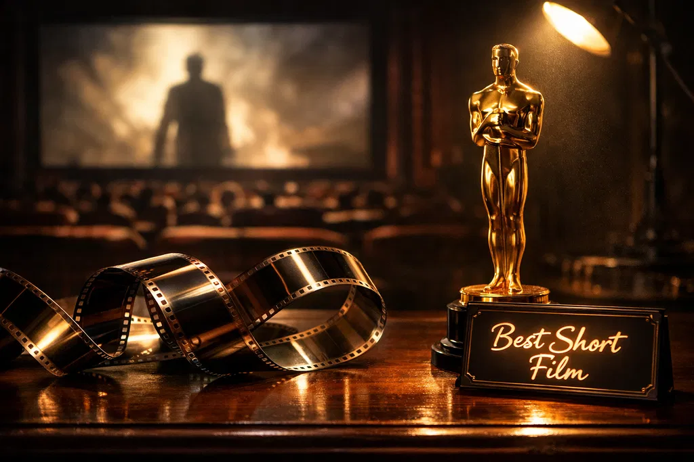
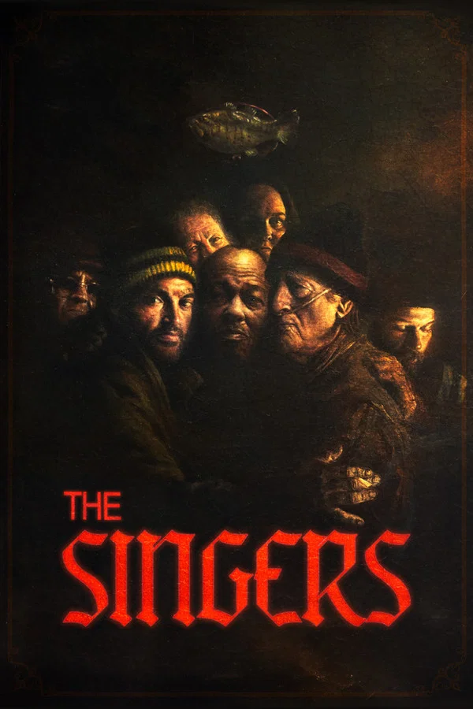
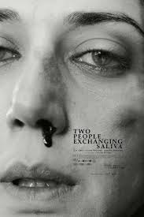
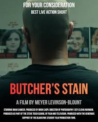
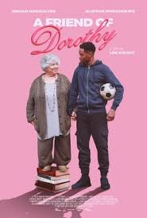
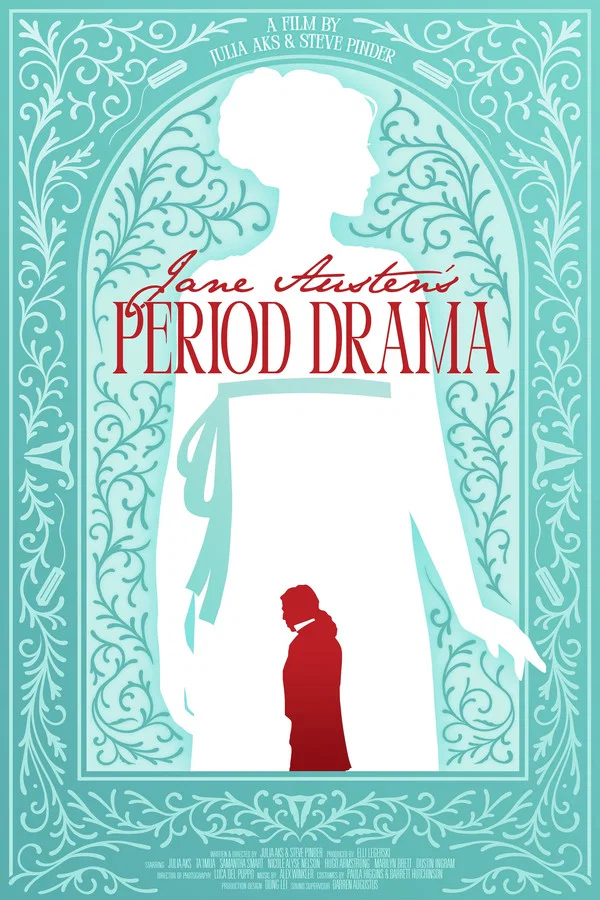

98th Annual Academy Awards
Melhor Curta Metragem
Conheça os candidatos à Premiação do Oscar 2026 por Melhor Curta Metragem.

Vencedor(Empate)
Os Cantores
Direção: Sam Davis.
A Trama: Acompanha um grupo de pessoas que, proibidas de falar em um cenário distópico ou opressor, utilizam o canto como única forma de resistência e conexão humana.
Destaques: A direção de som e as performances vocais cruas. O curta é elogiado por sua capacidade de criar um universo inteiro através da música e do silêncio, sem a necessidade de grandes orçamentos.

Vencedor(Empate)
Two People Exchanging Saliva
Direção: Natalie Musteata e Alexandre Singh
A Trama: O filme foca detalhadamente em um único beijo prolongado, explorando o que esse ato representa em termos de troca química, emocional e social entre dois estranhos.
Destaques: A cinematografia em macro e o ritmo contemplativo. É uma obra que desafia as convenções do romance cinematográfico, transformando o ato físico em uma peça de arte visual abstrata.

Butcher's Stain
Direção: Meyer Levinson-Blount
A Trama: Um açougueiro aposentado tenta desesperadamente limpar uma mancha no chão de sua loja que se recusa a sair, desencadeando memórias de um crime que ele acreditava ter enterrado.
Destaques: A atuação minimalista e o uso simbólico da cor e da textura. O curta utiliza o ambiente claustrofóbico para construir uma tensão que explode em um final surpreendente.

A Friend Of Dorothy
Direção: Lee Knight
A Trama: Ambientado em uma era pré-Stonewall, o filme mostra como códigos secretos (como a expressão do título) eram usados para criar redes de apoio e segurança.
Destaques: O design de figurino e a fotografia que evoca o Technicolor clássico de Hollywood. É um filme sobre esperança e a importância de encontrar sua "família escolhida".

Jane Austen's Period Drama
Direção: Julia Aks e Steve Pinder
A Trama: Jane Austen tenta terminar um de seus manuscritos enquanto lida com as dores, o desconforto e as limitações sociais impostas à higiene feminina no século XIX.
Destaques: O roteiro brilhante que mistura diálogos de época com uma sensibilidade moderna. O filme desmistifica a imagem "imaculada" das autoras clássicas, trazendo um realismo biológico hilário e necessário.